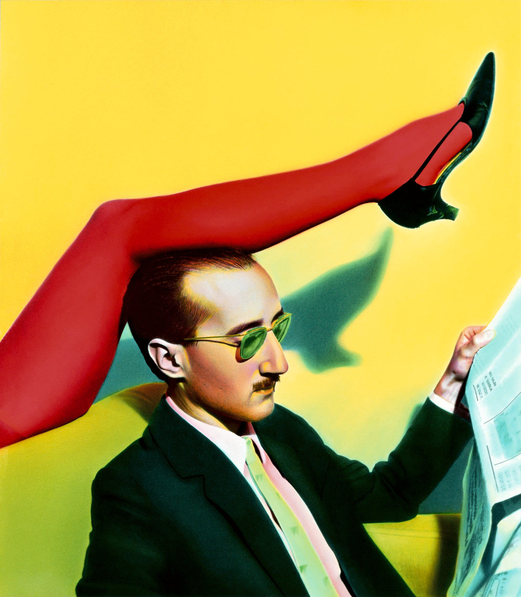

Not only photographers
Photographers' occupations over the decades
How have the parallel occupations of photographers changed over the decades? Many photographers are in fact multifaceted artists ranging from painting to literature, from architecture to cinema and media arts, while others have parallel occupations in the non-art field. A division has been made between occupations in the artistic and not, therefore we will have two different data visualizations.
The artistic categories try to follow a taxonomy of the arts that, with difficulty, scholars have always tried to build. Since the ancient Greeks, there was no definition of art, nor even a concept, these distinguished instead some activities, called "τεχνή" (techné). In the Middle Ages, we will then have the so-called seven liberal arts, divided into Trivium (the language sciences) and Quadrivium (the numbers sciences). It was not until the 19th century that Hegel’s five arts were divided, and five more arts were added in the 20th century, including cinema (the so-called seventh art). In this scenario photography, understood as art finds its place among the media arts together with radio and television.Among the non-artistic occupations, we find journalists, teachers and engravers but also more bizarre outliers professions such as Russian spy and wet nurse...
Main findings
Architecture, Sculpture
The relationship between photography and architecture dates back to the invention of photograph. Indeed, the first photographic image was that of an architectural space, the courtyard of the Maison du Gras, the family home of Nicéphore Niepce in Saint-PierreLoup-de-Varennes, near Chalon-sur-Saône (1827). The consistent relationship between the two arts is also demonstrated by the fact that several photographers have favored as the object of their works architectural elements, such as Berenice Abbott, who grew up in the artistic environments of New York in the early decades of 1900, which documents and testifies the coexistence of old and new buildings within the project entitled Changing New York.
The relationship of the architects with photography is also ancient and dates back to the pioneering period of the history of photography. One of the pioneers was Lotte Beese, born in Germany, who enrolled in the Bauhaus school specializing in textile design and then in architecture, at a time when this profession was still considered traditionally male.
Visual Art
Between the 50s and 70s we find several painters-photographers. These are years of great changes, of post-war recollection and of democratic openness to the future after the dark dictatorial pages. Women have also paved the way for affirmation in the field of the arts, thanks to feminist struggles, and they begin to question the very representation of women in their works.
Among these visionary photographers, we find Ouka Leele, born in Spain and an exponent of the "Movida", an artistic movement of liberation that was born after the death of Franco. Ouka’s works are born in black and white and are then painted before being photographed again. It is a particular and unique technique that mixes together photography and painting.
Literature
“The cheapness of writing paper is, of course, the reason why women have succeeded as writers before in other professions. Writing was an honorable and harmless occupation. Domestic peace was not disturbed by the crunch of a nib; the familiar balance was not aggravated”. These are the words said by Virginia Wolf speaking at a conference held at the London Society for Women’s Service in 1931.It is interesting to stop and reflect how the profession of writing has always been more akin to the female sphere and therefore less disruptive than female photography.
Eudora Welty is a perfect example of a writer-photographer. She is an exponent of contemporary American literature and she investigates the racial and cultural problems of the United States of the South, documenting the Mississippi region, the difficulties of workers during the Great Depression and African-American communities. His work as a photographer is characterized by great empathy and resonates with the characters and themes addressed in his books.
Cinema, Music, Theatre
Within the performing arts, there is a proliferation of actresses, singers, dancers and directors. Interestingly, the most widespread profession in this field is that of film director. Women photographers place their critical gaze on the world not only through the lens of the camera, but also through that of the movie camera.
One example is Helen Levitt, born in Brooklyn in 1913, who became famous for street photographs taken in New York in the late 30s, she directs several documentaries and works in cinema until the 60s.
Media Art
Among the media arts, which includes photography itself, there are three subcategories of the work as a photographer: the photojournalist, the photographer of fashion and of war. In fact, there are many photojournalists at the turn of the two wars and in particular in the Second World War to witness the atrocities of some of the darkest pages of history. Some of them even embrace both fashion and war photography, as if they wanted to show that women can carve out a space and have their own vision in situations that are anything but frivolous.
One example is Lee Miller, who began his career as a model for Vogue in New York in 1927 and then moved to London and began working as a fashion photographer for British Vogue in 1939. Later, in 1942, she was credited as a war correspondent for the same magazine and documented the liberation of the Dachau concentration camp. On that very day, in the evening, he is in Munich and gets caught in the bathtub of Adolf Hitler’s apartment. "I took some photos of the place and I even had a good night’s sleep in Hitler’s bed. In fact, I washed away Dachau’s dirt in his bathtub," she will write.